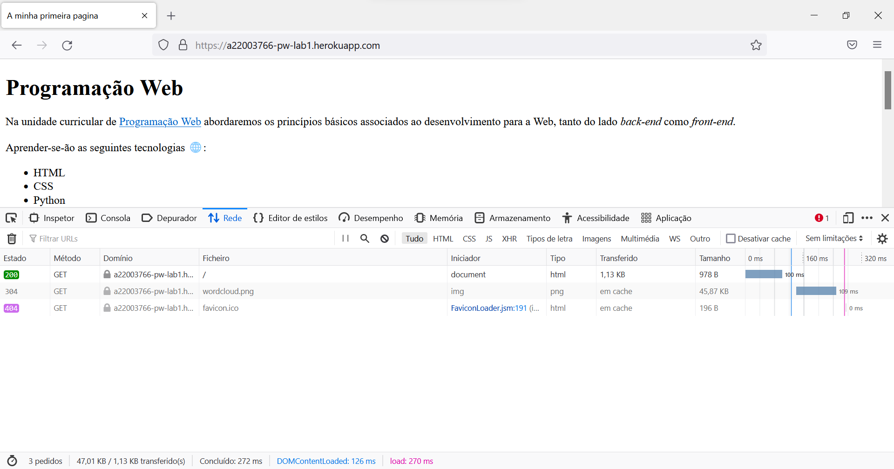
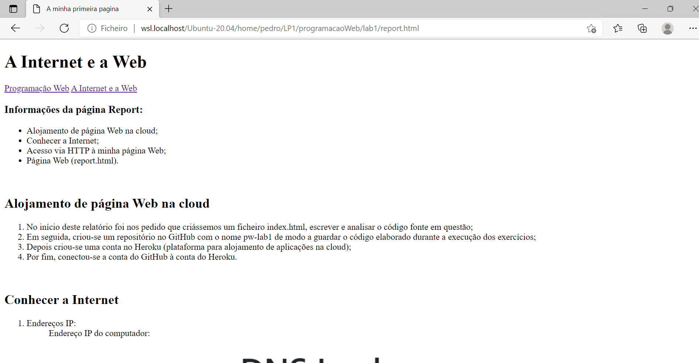

A Internet e a Web
Introdução à programação Web
Conhecer a Internet
Laboratórios PW
Informações da página Report:
- Alojamento de página Web na cloud;
- Conhecer a Internet;
- Acesso via HTTP à minha página Web;
- Página Web (report.html).
Alojamento de página Web na cloud
- No início deste relatório foi nos pedido que criássemos um ficheiro index.html, escrever e analisar
o código fonte em questão;
- Em seguida, criou-se um repositório no GitHub com o nome pw-lab1 de modo a guardar o código
elaborado durante a execução dos exercícios;
- Depois criou-se uma conta no Heroku (plataforma para alojamento de aplicações na cloud);
- Por fim, conectou-se a conta do GitHub à conta do Heroku.
Conhecer a Internet
- Endereços IP:
Endereço IP do computador:


- Percurso:
Traceroute (comando tracert) é uma ferramenta de diagnóstico que rastreia a rota que os pacotes IP
fazem, desde o seu computador até um endereço IP destino/ou URL que especifique. Este
identifica os routers pelos quais os pacotes passam até o seu destino, indicando o tempo que
demoram por "salto" entre router.

Utilizou-se a ferramenta GeoTraceroute para visualizar graficamente por onde passam os pacotes IP,
até chegar ao seu servidor Heroku. Escolhi como origem (source) Portugal, e como
destino o URL do site.

Acesso via HTTP à minha página Web
- HTTP:
O protocolo de troca de mensagens entre um cliente e um servidor Web é o HTTP.
Um Web browser (Chrome, Safari, Firefox, etc) é uma aplicação que corre numa máquina "cliente"
(o seu portátil por exemplo) e é capaz de enviar um pedido usando o protocolo HTTP a um servidor
Web:
- O cliente pode pedir uma determinada página Web através de uma mensagem HTTP GET.
O servidor Web irá responder-lhe a esse pedido, enviando os conteúdos correspondentes. Tipicamente
é recebido um ficheiro HTML juntamente com algumas imagens e outros ficheiros auxiliares, sendo o
browser capaz de representar visualmente o conteúdo.
- O cliente pode também enviar ao servidor Web dados que preencheu por exemplo num formulário,
através de uma mensagem HTTP POST. Esta é a arquitetura cliente-servidor.
Obtemos o seguinte:

- Inspect
Todos os browsers têm uma ferramenta (browser developer tool) que permite inspecionar ficheiros
descarregados pelo browser, permitindo analisar uma grande variedade de informação.
Inspecionando o ficheiro, obtive a seguinte informação:
- Header

- Timing

Página Web (report.html)
